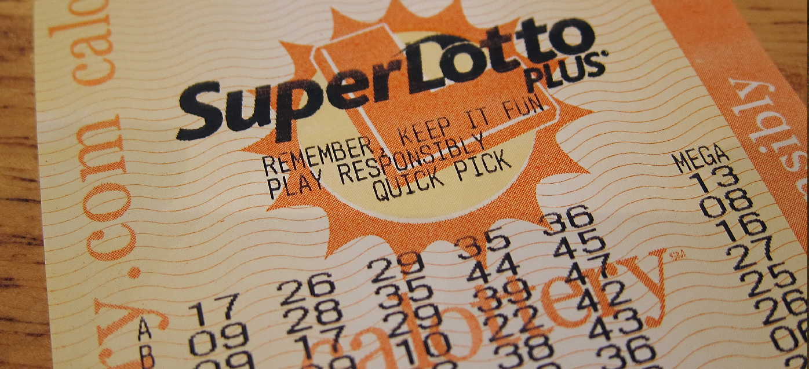

Introduction to Sequences, Probability and Counting Theory

A lottery winner has some big decisions to make regarding what to do with the winnings. Buy a new home? A luxury convertible? A cruise around the world?
The likelihood of winning the lottery is slim, but we all love to fantasize about what we could buy with the winnings. One of the first things a lottery winner has to decide is whether to take the winnings in the form of a lump sum or as a series of regular payments, called an annuity, over an extended period of time.
This decision is often based on many factors, such as tax implications, interest rates, and investment strategies. There are also personal reasons to consider when making the choice, and one can make many arguments for either decision. However, most lottery winners opt for the lump sum.
In this chapter, we will explore the mathematics behind situations such as these. We will take an in-depth look at annuities. We will also look at the branch of mathematics that would allow us to calculate the number of ways to choose lottery numbers and the probability of winning.